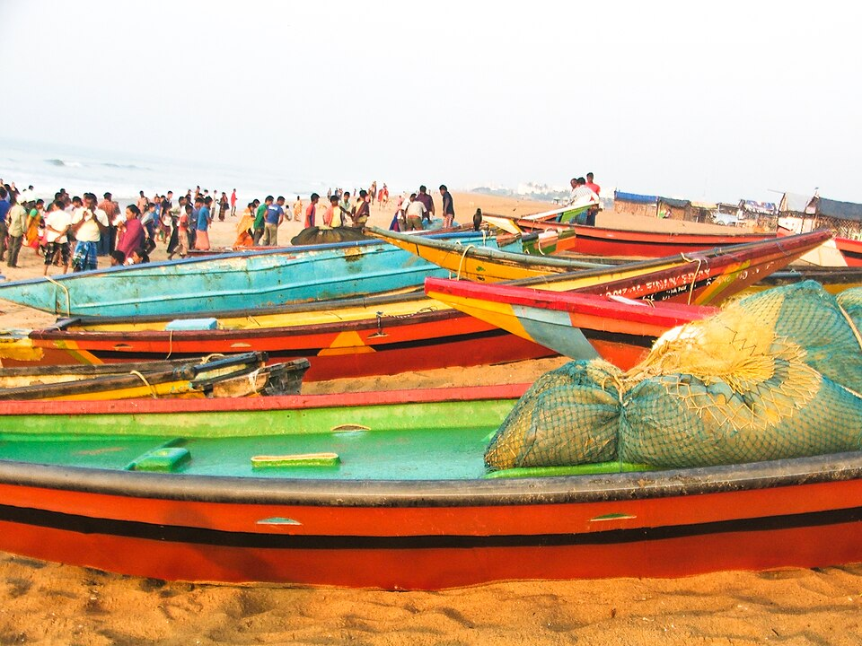
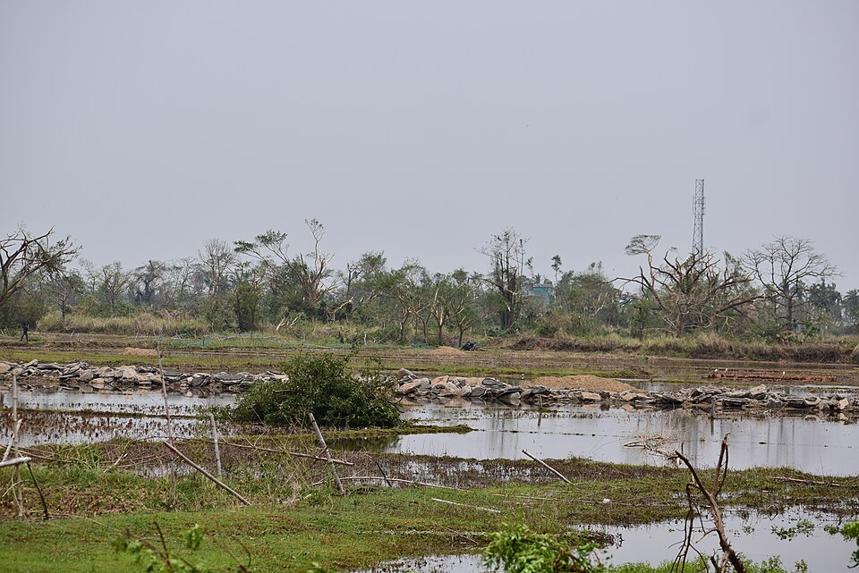
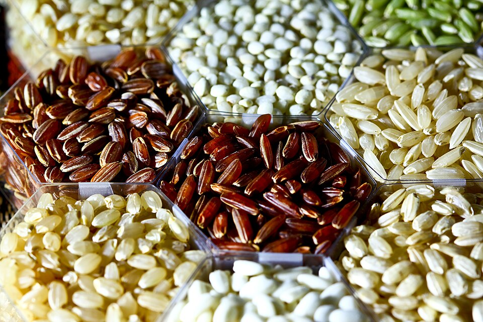
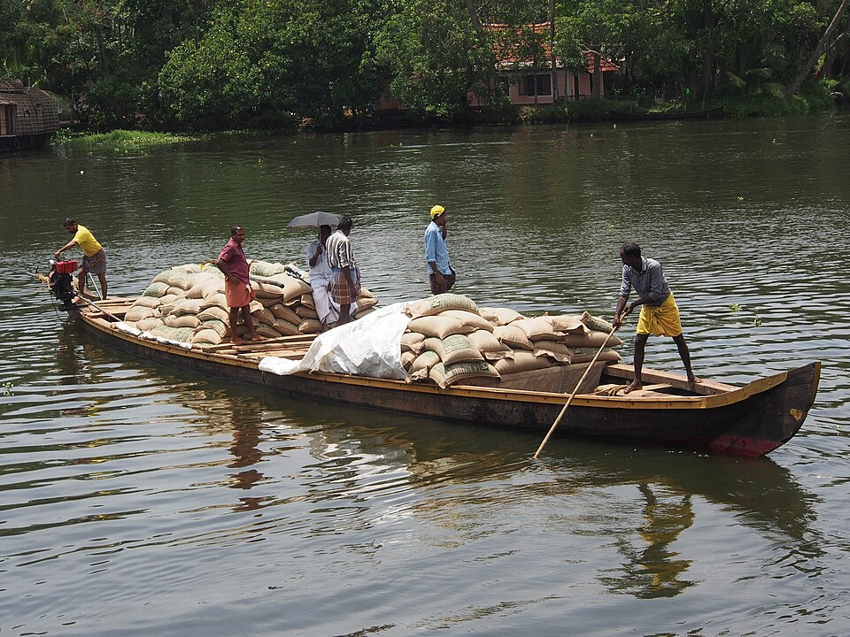

Cyclone Asha appeal: 248 donors so far
Cyclone and flood relief for the Odisha coast
We buy rice, water, tarpaulins and clinic supplies from local traders after a cyclone or flood. Every payment and its receipt is published on this page.

Where the Asha money went. Live from the fund's ledger.
Cyclone Asha reached Puri and Ganjam at 180 km/h and spoiled the wells of 140 villages. These figures change as money comes in and goes out.
How a gift is tracked
-
Each appeal opens with its own code
The Asha fund opened on 20 October with the code #ASHA. A bank transfer with that code lands on its ledger without anyone retyping it.

-
Gifts buy rice, water and shelter
A seven-day family ration of rice, dal and oil costs $16. A 20-litre jerrycan of safe water costs 60 cents.

-
Every payment goes out with its receipt
Supplies reach cut-off villages by truck and boat. Each payment carries its receipt, and the ledger shows any change made after it.

Flood relief and flood preparedness
The Mahanadi response finished under budget when state relief arrived early. The $7,085 left is going back to donors, or into next year's preparedness fund if they choose.
All three funds in one view
Money in, money out and what each fund still holds. A new appeal appears here the day it opens.
What do you publish about me?
Nothing that names you. The figures show totals by channel; names, emails and bank details stay private.
Can I give by bank transfer?
Yes. Put the fund's code, such as #ASHA, in the reference so it reaches the right appeal.
Who checks the receipts?
Our finance team attaches each receipt to its payment, and a second person signs off large manual entries.
What happens to money left over?
When a fund closes, we decide how much of what's left moves to our other open funds. Anything we don't move stays in the bank and stays on the closed fund's public record.
How current are the figures?
They are read from the ledger when the page loads and refresh every minute.